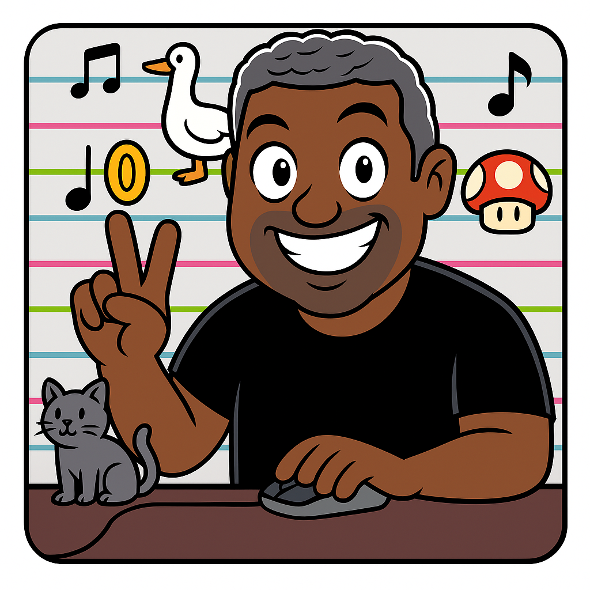

100 Days as the Mario Paint Music Guy
Originally published December 7, 2025 at fakeronjan.com
(Post-challenge, I have continued making videos without a set cadence)
For 100 straight days, I’ve uploaded music to my new YouTube channel, Mario Paint Music Guy. (Well, technically, the 100th goes up on December 10th.) It’s the most consistent effort I’ve put into music of any kind in decades, and I’m excited to keep it going. At this milestone, I thought I’d do a quick retrospective on the experience so far.
The idea came together pretty quickly. On August 17th, I posted a birthday retro about the 40 years of my life as a musician. I closed it with this commitment:
Even though I still don’t know exactly how I intend to keep in touch with music going forward, I know that I will find a way. Real Ronjan
A few days later while on vacation, in the middle of our household’s K-Pop Demon Hunters mania, I thought it’d be fun to do some of the music in Mario Paint on the Analogue Pocket I’d brought with me. Between August 21st and 24th I wrote up 5 of the songs (Golden, Soda Pop, How It’s Done, Takedown, and What It Sounds Like) and recorded them with my phone.
I posted them on my personal YouTube channel (I’ve since moved them to the Mario Paint Music Guy channel) and they got a few hundred views. Not bad for a lark, I definitely timed the market!
Then, on August 28th, Nintendo Life posted an amazing video about Mario Paint. They bought 100 used cartridges of the game to see what kind of masterpieces were saved to them. And while they found some gold, the ultimate takeaway was that most of the batteries that were backing up the data of these 30-year-old cartridges have likely failed, meaning all of these works are lost to time.
As someone who spent dozens of hours creating music in Mario Paint as a child, this hit hard. I wanted to get back to creation, I wanted to bring back some of my old stuff, and I wanted to archive my work properly.
So, after a quick check online to make sure that no one else already had the name, the Mario Paint Music Guy was born!

I didn’t really have a game plan from here. I just started making music and recording it. I did some pop music, some video game music, some sports themes. Anything that came to mind. I asked friends for some requests to get the ideas flowing. Nirvana. Balatro. System of a Down. Juvenile.
Once I had a dozen or so completed, I started posting them daily. The first one was a re-upload of Golden from K-Pop Demon Hunters on September 2nd. And I was off to the races!
At first I was posting to YouTube, re-uploading as YouTube Shorts, and also posting as Instagram Reels. That ended up being overkill and I noticed that the Shorts & Reels would do really big views in a day - like hundreds - but would then fall off. The standard YouTube uploads would be much slower burns, a few views a day, but they wouldn’t die off after day one. I decided that regular YouTube was the best place to focus. I’m not doing this to make money, I’m doing this to preserve and share my work. So that’s where it belongs.
It’s important to call out here that Mario Paint’s music composer has some huge limitations. You can only have 96 beats worth of music - 24 measures of 4/4 or 32 measures of 3/4, so you can only do part of a song. You can only have 3 instruments playing at a given time and they can’t play the same note, so you’ve got to pick which instrument plays what note judiciously. And there’s no sharps and flats, meaning you’re pretty much locked into transposing into C or G major and A, D, or perhaps E minor. This forces creative tradeoffs that don’t exist in other music creation tools.
I’m fully aware of mods that eliminate these restrictions such as Mario Paint Music Composer, but the limitations of original Mario Paint are my favorite thing about it. Find a way to make it work. And I did!
My process for creation was pretty straightforward. I am blessed with perfect pitch and can notate pretty much anything by ear, so each one of these took somewhere between 20-30 minutes to do. I sequenced the layers pretty much the same every time, starting with the melody, then the bass, then percussion, then a few ornamental layers until I liked how it sounded. I demonstrated the process in this video:
Because I had a buffer of a dozen or so videos, I had flexibility on when I’d do these. Because I had the Analogue Pocket, I could do them anywhere, even on the daily bus commute. Sometimes I’d go a stretch making one a day for a bit. Other times I’d have a dry spell and would binge-create 5+ in a row to catch up.
It never really felt like work. On the contrary, if anything, it was an exciting thing to do whenever I had the time. I looked forward to it and never fell into the content creator stress loop. It helps that this channel is really small and there’s not much at stake. I’m well below any thresholds where this can make any money, and I’m not particularly interested in changing that.
That said, on September 23rd I started using a capture card to upgrade my production quality at least a little bit. No more cell phone recording of another screen. Not quite the big leagues but I’m glad I did it.
My top category by far was game music (playlist). The Mario theme, the Zelda theme, the Balatro theme, lots of Persona music, and so on. 29 tracks in total. In terms of pop music, I did 18 tracks from the 2000s (playlist), 12 from the 1990s (playlist), and even a couple from the 1980s (playlist). I did 6 sports themes (playlist), 5 movie and TV themes (playlist), and 4 Disney tracks (playlist). I even brought back childhood compositions (playlist) - some that I had originally written for the piano, others that I had originally done in Mario Paint back then. And perhaps dorkiest, I did the Incoming Huddle music from Slack, yes, the work program.
Across everything, here are my top 5 favorites that I’ve published so far:
5. Golden (part 2) by Huntr/x from K-Pop Demon Hunters
My very first upload for the channel was from a different part of this song, but I took a second crack at it to do the verse section. This was one of my first experiments with doing two melody sections at the same time, getting Rumi, Zoey, and Mira in one shot. I like how it came together.
4. Thong Song by Sisqo
I like how the ornamental instrumentation brings the energy level up on this one. They emulate motifs from other parts of the song.
3. Balatro Theme
Honestly, I just wasn’t sure if I’d be able to get this theme working in Mario Paint, given its odd time signature and what would appear to be required sharps and flats. I was really thrilled that it ended up working, at least as a reasonable approximation.
2. Stupify by Disturbed
Another personal favorite that I wasn’t sure was possible in Mario Paint. I really got the driving rhythm working, and the goose instrument matches David Draiman’s energy level.
1. Back That Thang / Azz Up by Juvenile
There was no doubt that once I got this one working it’d be a personal favorite. The pig and Yoshi sounds got Juvenile’s flow down perfectly and I was absolutely thrilled. It’ll be hard to top this one.
So what’s next? Once the 100th video goes up on December 10th, I’m going to take a short break. I don’t know how long, it could be a few days or a few months. But I’ll be making music whenever I can and building up a buffer to post again.
So this isn’t the end of an experiment. It’s just the beginning. I’m not done, I can’t be done. After all, I’m the Mario Paint Music Guy.